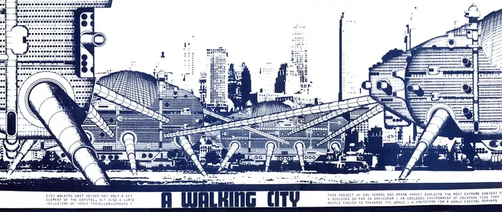
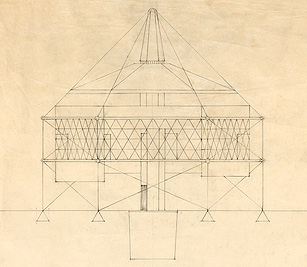

Manifesto Scrapbook
Archigram’s Walking Cities (1964), a mirror of the NWC’s concept of a networked cellular structure. Just thought it would be appropriate to start off with that, eheh…
There have been many great conversations around the crafting of a manifesto for the NWC, both on the server and on the etherpad. While it’s best to go straight to those sources, I thought I’d also make a quick note of the key themes and values that seem to be re-emerging. (The A’s and B’s line up roughly – but not entirely – with the sections in the etherpad document.)
This is only a scrapbook! Not a draft or anything canonically representative of the final manifesto. All errors are mine.
1. Freedom and Radicalism
(A) The New Web is free – in the many senses of the word. Financially free, free from the race for artificial expansion, and free for study, adaptation, and organic growth. Value is social and emotional, not monetary.
2. Decentralised Self-Custody
(A) One should be encouraged to take custody over their presence on the web by self-hosting their content. I think it should be acknowledged, however, that this takes learning and commitment, so I think that (5) plays strongly into this principle.
3. Resilience and Intentionality
(B) Permacomputing (which I hadn’t heard of before; thanks, owocean) encompasses a sphere of values which discuss an attitude of longevity, lightness, recycling, resilience, and so on. There is a lot to delve into here, things probably worth writing and thinking on [1]. To me it appears to relate to thoughtful and intentional online practice/praxis also discussed. Care, intentionality, and space (i.e., logging off sometimes!) is going to help cultivate a permaculture-culture.
4. Collectivism and Consensus
(B) It was brought up on the etherpad, but this has been a core part of the NWC since its beginning; it will be important to maintain these principles of discussion and agreement.
5. Education and Service Provision
(B) It’s been heartening to see a strong ethos of educating and volunteering develop. This output emerges in the form of writing on radical outreach, social philosophy, and the infrastructure proper which seeks to encourage and shepherd those values. In my view the NWC, with its diversity of members, is well-poised to tackle these outcomes.
* * *
Footnotes
A Minimum Dynamaxion Home Project – R. Buckminster Fuller (1927).
- Nerd note: Fuller once asked: “how much does your house weigh”? I think the oddball views described in this way i.e., in Critical Path could have some value for the NWC.